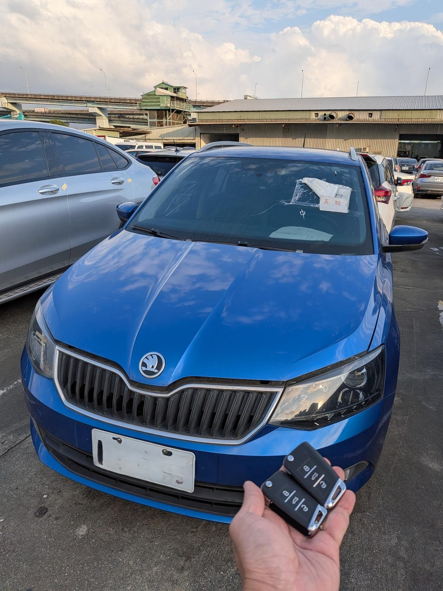

雲林 Skoda Kodiaq 晶片鑰匙遺失：車況確認與到場評估紀錄

現場實拍：Skoda Kodiaq 晶片鑰匙遺失，到場完成交車前確認
在雲林地區，面對 Skoda 最新款 Kodiaq 的全鑰匙遺失，極致核心展現了頂尖的車況確認工藝。
服務重點：現場評估與交車確認
Skoda Kodiaq 晶片鑰匙遺失時，建議先確認車款年份、鑰匙狀態、停放位置與現場照片。ProCore 會依車況與現場條件評估服務方向，完成後再確認鑰匙基本使用狀態與後續注意事項。

現場實拍：Skoda Kodiaq 晶片鑰匙遺失，到場完成交車前確認
在雲林地區，面對 Skoda 最新款 Kodiaq 的全鑰匙遺失，極致核心展現了頂尖的車況確認工藝。
Skoda Kodiaq 晶片鑰匙遺失時，建議先確認車款年份、鑰匙狀態、停放位置與現場照片。ProCore 會依車況與現場條件評估服務方向，完成後再確認鑰匙基本使用狀態與後續注意事項。